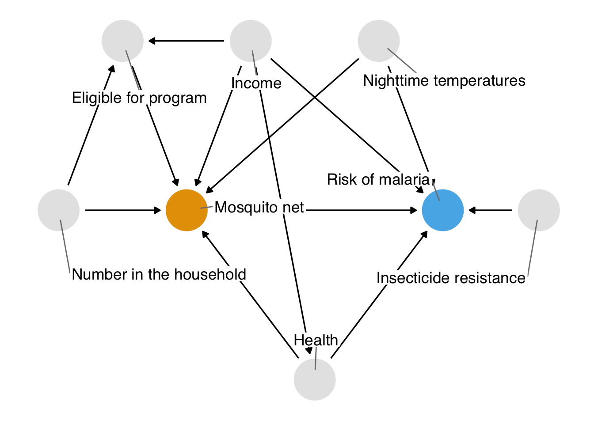
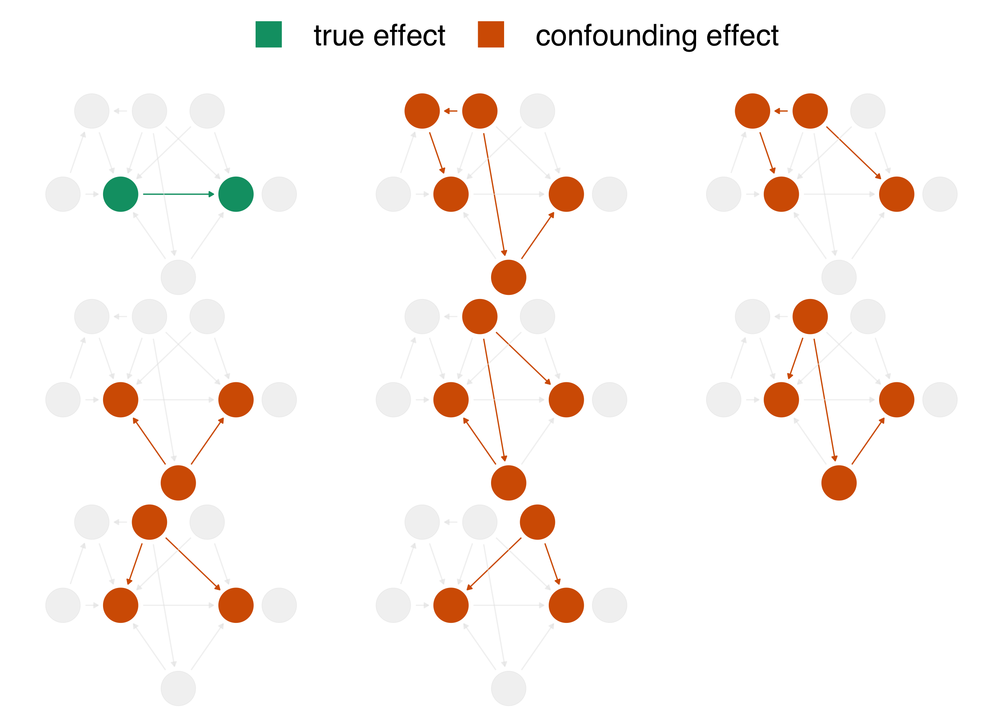
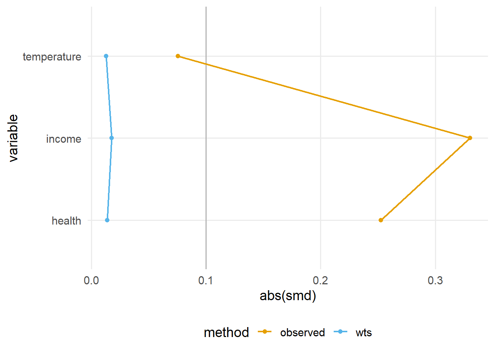
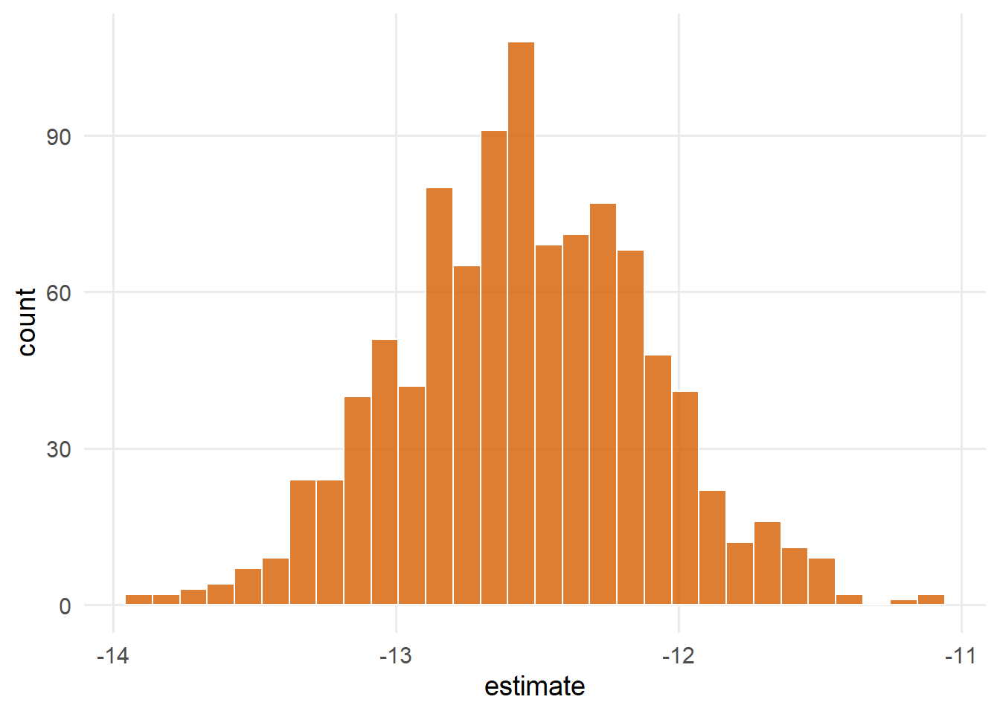
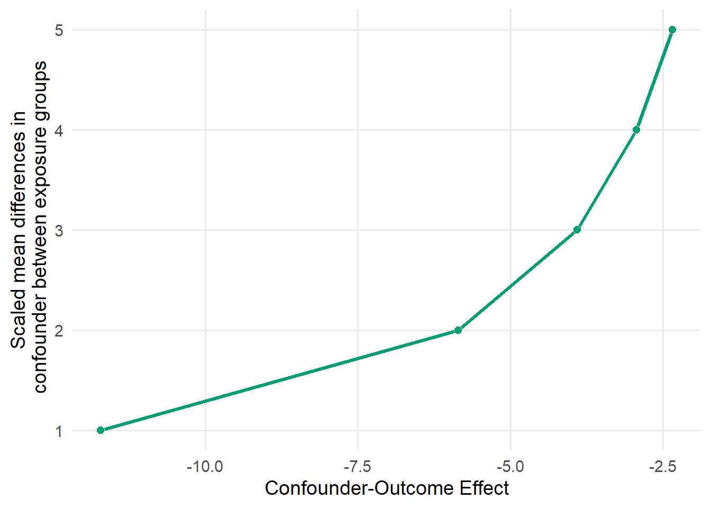
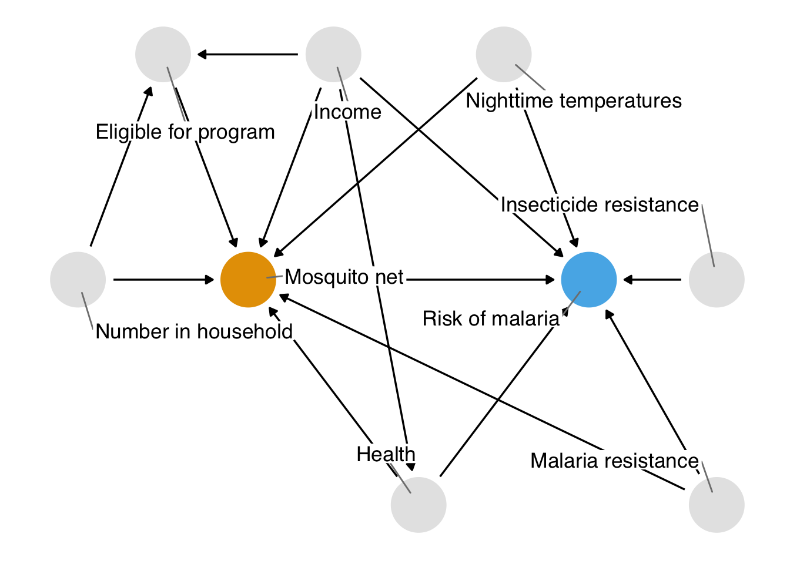

Analizaremos el siguiente ejemplo “relación causal entre uso de mosquiteros y malaria” con técnicas que aprendemos a lo largo de este programa.
Pasos
Especifique una pregunta causal
Dibujar nuestras suposiciones usando un diagrama causal.
Modele nuestras suposiciones
Diagnosticar nuestros modelos
Estimar el efecto causal.
Realizar análisis de sensibilidad sobre la estimación del efecto.
Nos centraremos en las ideas más amplias detrás de cada paso y cómo se ven en conjunto; sin embargo, no esperamos que digiera completamente cada idea. Pasaremos el resto del programa analizando cada paso en detalle.
14.1 Especificar una pregunta causal
Pregunta: ¿el uso de un mosquitero reduce el riesgo de malaria?
Alrededor del 86% de las muertes por malaria ocurrieron en 29 países. Casi la mitad de todas las muertes por malaria ocurrieron en sólo seis de esos países: Nigeria (27%), la República Democrática del Congo (12%), Uganda (5%), Mozambique (4%), Angola (3%) y Burkina Faso (3%). La mayoría de estas muertes ocurrieron en niños menores de 5 años.
Los mosquiteros previenen la morbilidad y la mortalidad debidas a la malaria al proporcionar una barrera contra las picaduras infecciosas del principal huésped de los parásitos de la malaria, el mosquito. Los seres humanos han utilizado mosquiteros desde la antigüedad. Heródoto, el autor griego de Las Historias del siglo V a. C. , observó que los egipcios usaban sus redes de pesca como mosquiteros.
Muchas redes modernas también se tratan con insecticida, que se remonta a los soldados rusos en la Segunda Guerra Mundial ( Nevill et al. 1996 ) , aunque algunas personas todavía las usan como redes de pesca ( Gettleman 2015 ) .
Es fácil imaginar un ensayo aleatorio que aborde esta pregunta: los participantes de un estudio son asignados aleatoriamente para usar un mosquitero y los seguimos a lo largo del tiempo para ver si hay una diferencia en el riesgo de malaria entre los grupos. La aleatorización es a menudo la mejor manera de estimar un efecto causal de una intervención porque reduce la cantidad de supuestos que necesitamos hacer para que esa estimación sea válida (analizaremos estos supuestos en la Sección 3.3 ). En particular, la aleatorización aborda muy bien los factores de confusión, teniendo en cuenta factores de confusión que tal vez ni siquiera conozcamos.
Varios ensayos históricos han estudiado los efectos del uso de mosquiteros sobre el riesgo de malaria, y varios estudios esenciales se realizaron en la década de 1990. Un metaanálisis de 2004 encontró que los mosquiteros tratados con insecticida reducían la mortalidad infantil en un 17%, la prevalencia del parásito de la malaria en un 13% y los casos de malaria grave y no complicada en aproximadamente un 50% (en comparación con ningún mosquitero) ( Lengeler 2004 ) . Desde que la Organización Mundial de la Salud comenzó a recomendar mosquiteros tratados con insecticidas, la resistencia a los insecticidas ha sido una gran preocupación. Sin embargo, un análisis de seguimiento de los ensayos encontró que aún no ha impactado los beneficios de los mosquiteros para la salud pública ( Pryce, Richardson y Lengeler 2018 ) .
Hay varias razones por las que es posible que no podamos realizar un ensayo aleatorio, incluidas la ética, el costo y el tiempo. Disponemos de pruebas sustanciales y sólidas a favor del uso de mosquiteros, pero consideremos algunas condiciones en las que la inferencia causal observacional podría ayudar.
Es interesante cómo los estudios observacionales pueden proporcionar información valiosa, especialmente en situaciones donde realizar ensayos controlados aleatorios podría ser difícil, poco ético o llevar mucho tiempo. En el caso del uso de mosquiteros para combatir la malaria, los estudios observacionales pueden ser una herramienta poderosa para comprender mejor los efectos en diferentes poblaciones y contextos.
Por ejemplo, en el caso ético que mencionamos, donde ya sabemos que los mosquiteros son muy eficaces, sería poco ético retenerlos para llevar a cabo un ensayo controlado aleatorio. En su lugar, los estudios observacionales pueden proporcionar información sobre los efectos a largo plazo del uso de mosquiteros en la primera infancia, como el estudio que mencionamos sobre la supervivencia hasta la edad adulta en Tanzania.
Además, como mencionamos, los estudios observacionales también pueden ayudar a comprender efectos que pueden ser difíciles de investigar con ensayos controlados aleatorios, como el impacto de los mosquiteros en toda la comunidad, no solo en aquellos que los usan directamente. Esto puede ser especialmente relevante para políticas de salud pública y programas de intervención.
Cuando realizamos un estudio observacional, sigue siendo útil pensar en el ensayo aleatorio que realizaríamos si fuera posible. El ensayo que intentamos emular en este análisis causal es el ensayo objetivo. Considerar el ensayo objetivo nos ayuda a hacer que nuestra pregunta causal sea más precisa. Consideremos la pregunta causal planteada anteriormente: ¿el uso de un mosquitero reduce el riesgo de malaria?
Esta pregunta es relativamente sencilla, pero aún vaga, por lo que, necesitamos aclarar algunas áreas clave:
¿Qué queremos decir con “mosquitero”? Hay varios tipos de mosquiteros: mosquiteros sin tratar, mosquiteros tratados con insecticida y mosquiteros más nuevos y duraderos tratados con insecticida.
¿Riesgo comparado con qué? ¿Estamos, por ejemplo, comparando los mosquiteros tratados con insecticida con la ausencia de mosquiteros? ¿Redes sin tratar? ¿O estamos comparando un nuevo tipo de mosquitero, como los mosquiteros de larga duración tratados con insecticida, con mosquiteros que ya están en uso?
¿Riesgo definido por qué? ¿Una persona contrajo malaria o no? ¿Si una persona murió de malaria?
¿Riesgo entre quiénes? ¿Cuál es la población a la que estamos tratando de aplicar este conocimiento? ¿A quién es práctico incluir en nuestro estudio? ¿A quién podríamos necesitar excluir?
Usaremos datos simulados para responder una pregunta más específica: ¿El uso de mosquiteros tratados con insecticida, en comparación con ningún mosquitero, disminuye el riesgo de contraer malaria después de 1 año?
Los investigadores están interesados en saber si el uso de mosquiteros disminuye el riesgo de que un individuo contraiga malaria. Han recopilado datos de 1.752 hogares en un país no identificado y tienen variables relacionadas con factores ambientales, salud individual y características del hogar. Los datos no son experimentales : los investigadores no tienen control sobre quién usa mosquiteros, y los hogares individuales toman sus propias decisiones sobre si solicitar mosquiteros gratuitos o comprar sus propios mosquiteros, así como si los usan si los tienen.
Los investigadores están interesados en saber si el uso de mosquiteros disminuye el riesgo de que un individuo contraiga malaria. Han recopilado datos de 1.752 hogares en un país no identificado y tienen variables relacionadas con factores ambientales, salud individual y características del hogar. Los datos no son experimentales : los investigadores no tienen control sobre quién usa mosquiteros, y los hogares individuales toman sus propias decisiones sobre si solicitar mosquiteros gratuitos o comprar sus propios mosquiteros, así como si los usan si los tienen.
\(id\) una variable de identificación
\(netynetnum\) una variable binaria que indica si el participante usó una red (1) o no usó una red (0)
\(malariarisk\) escala de riesgo de malaria que va de 0 a 100
\(income\) ingreso semanal, medido en dólares
\(health\) una escala de puntuación de salud que va de 0 a 100
\(household\) número de personas que viven en el hogar
\(eligible\) una variable binaria que indica si el hogar es elegible para el programa neto gratuito.
\(temperature\) la temperatura promedio por la noche, en grados Celsius
\(resistance\) Resistencia a los insecticidas de los mosquitos locales. Una escala de 0 a 100, donde los valores más altos indican una mayor resistencia.
La distribución del riesgo de malaria parece ser bastante diferente según el uso de la red.
Figure 2.1: Gráfico de densidad del riesgo de malaria para quienes usaron y no usaron mosquiteros. El riesgo de malaria es menor para quienes usan mosquiteros.
En la Figura 2.1 , la densidad de quienes usaron mosquiteros está a la izquierda de quienes no usaron mosquiteros. La diferencia media en el riesgo de malaria es de aproximadamente 16,4, lo que sugiere que el uso de mosquiteros podría proteger contra la malaria.
14.2 Dibujar nuestras suposiciones usando un diagrama causal
El problema al que nos enfrentamos es que otros factores pueden ser responsables del efecto que estamos viendo. En este ejemplo, nos centraremos en la confusión: una causa común del uso de redes y la malaria sesgará el efecto que vemos a menos que lo tengamos en cuenta de alguna manera. Una de las mejores formas de determinar qué variables debemos tener en cuenta es utilizar un diagrama causal. Estos diagramas, también llamados gráficos acíclicos dirigidos causalmente (DAG), visualizan las suposiciones que hacemos sobre las relaciones causales entre la exposición, el resultado y otras variables que creemos que podrían estar relacionadas.
Aquí está el DAG que proponemos para esta pregunta.

Figura 2.2: Diagrama causal propuesto del efecto del uso de mosquiteros en la malaria. Este gráfico acíclico dirigido (DAG) establece nuestra suposición de que el uso de mosquiteros provoca una reducción en el riesgo de malaria. También dice que asumimos que el riesgo de malaria se ve afectado por el uso de mosquiteros, los ingresos, la salud, la temperatura y la resistencia a los insecticidas; el uso de Internet se ve afectado por los ingresos, la salud, la temperatura, la elegibilidad para el programa de Internet gratuito y la cantidad de personas en un hogar; la elegibilidad para los programas netos gratuitos se ve afectada por los ingresos y el número de personas en un hogar; y la salud se ve afectada por los ingresos.
En los DAG, cada punto representa una variable y cada flecha representa una causa. En otras palabras, este diagrama declara cuáles creemos que son las relaciones causales entre estas variables. En la Figura 2.2 , decimos que creemos:
El riesgo de malaria se ve afectado causalmente por el uso de mosquiteros, los ingresos, la salud, la temperatura y la resistencia a los insecticidas.
El uso de Internet se ve afectado causalmente por los ingresos, la salud, la temperatura, la elegibilidad para el programa de Internet gratuito y la cantidad de personas en un hogar.
La elegibilidad para los programas netos gratuitos está determinada por los ingresos y la cantidad de personas en un hogar.
La salud se ve afectada causalmente por los ingresos.
Puede estar de acuerdo o en desacuerdo con algunas de estas afirmaciones. ¡Eso es bueno! Dejar al descubierto nuestras suposiciones nos permite considerar la credibilidad científica de nuestro análisis. Otro beneficio de usar DAG es que, gracias a sus matemáticas, podemos determinar con precisión el subconjunto de variables que debemos tener en cuenta si asumimos que este DAG es correcto.
El principal problema al que nos enfrentamos es que, cuando analizamos los datos con los que trabajamos, vemos el impacto del uso de la red en el riesgo de malaria y de todas estas otras relaciones . En la terminología DAG, tenemos más de una vía causal abierta. Si este DAG es correcto, tenemos ocho vías causales: la ruta entre el uso de redes y el riesgo de malaria y otras siete vías de confusión .

Figura 2.3: En el DAG propuesto, hay ocho vías abiertas que contribuyen al efecto causal observado en la regresión ingenua: el efecto real (en verde) del uso de mosquiteros sobre el riesgo de malaria y otras siete vías de confusión (en naranja). La estimación ingenua es errónea porque es una combinación de todos estos efectos.
Cuando calculamos una regresión lineal ingenua que solo incluye el uso de redes y el riesgo de malaria, el efecto que vemos es incorrecto porque las otras siete vías de confusión en la Figura 2.3 lo distorsionan. En terminología DAG, debemos bloquear estos caminos abiertos que distorsionan la estimación causal que buscamos. (Podemos bloquear caminos a través de varias técnicas, incluyendo estratificación, emparejamiento, ponderación y más). Afortunadamente, al especificar un DAG, podemos determinar con precisión las variables que necesitamos controlar. Para este DAG, necesitamos controlar tres variables: salud, ingresos y temperatura. Estas tres variables son un conjunto de ajuste mínimo , el conjunto (o conjuntos) mínimo de variables que necesita para bloquear todas las vías de confusión.
14.3 Modele nuestras suposiciones
Usaremos una técnica llamada Ponderación de probabilidad inversa (IPW) para controlar estas variables. Usaremos la regresión logística para predecir la probabilidad de tratamiento: la puntuación de propensión. Luego, calcularemos ponderaciones de probabilidad inversa para aplicarlas al modelo de regresión lineal que ajustamos anteriormente. El modelo de puntuación de propensión incluye la exposición (uso neto) como variable dependiente y el ajuste mínimo establecido como variables independientes.
El modelo de puntuación de propensión es un modelo de regresión logística con la fórmula \(net ~ income + health + temperature\), que predice la probabilidad de uso de mosquiteros en función de los factores de confusión ingreso, salud y temperatura.
propensity_model<-glm(net~income+health+temperature, data =net_data, family =binomial())# the first six propensity scoreshead(predict(propensity_model, type ="response"))
Podemos utilizar las puntuaciones de propensión para controlar los factores de confusión de varias maneras. En este ejemplo, nos centraremos en la ponderación. En concreto, calcularemos la ponderación de probabilidad inversa para el efecto medio del tratamiento (EAT). El ATE representa una pregunta causal concreta: ¿qué pasaría si todos los participantes en el estudio utilizaran mosquiteras frente a qué pasaría si nadie en el estudio utilizara mosquiteras?
Para calcular el ATE, utilizaremos los paquetes broom y propensity. La función augment() de broom extrae información relacionada con la predicción del modelo y la une a los datos. La función wt_ate() de propensity calcula la ponderación de probabilidad inversa dada la puntuación de propensión y la exposición.
Para la ponderación de probabilidad inversa, la ponderación ATE es la probabilidad de recibir el tratamiento que realmente recibió. En otras palabras, si utilizó un mosquitero, la ponderación ATE es la probabilidad de que utilizara un mosquitero, y si no lo utilizó, es la probabilidad de que no lo utilizara.
library(broom)library(propensity)net_data_wts<-propensity_model|>augment(newdata =net_data, type.predict ="response")|># .fitted is the value predicted by the model# for a given observationmutate(wts =wt_ate(.fitted, net))
wts representa la cantidad en que cada observación será ponderada al alza o a la baja en el modelo de resultados que pronto ajustaremos. Por ejemplo, el hogar número 16 utilizó un mosquitero y tuvo una probabilidad prevista de 0,41. Es una probabilidad bastante baja teniendo en cuenta que, de hecho, utilizaron un mosquitero. Se trata de una probabilidad bastante baja teniendo en cuenta que, de hecho, utilizaron un mosquitero, por lo que su ponderación es mayor, 2,42. En otras palabras, este hogar tendrá una ponderación superior a la del modelo lineal ingenuo que ajustamos anteriormente. El primer hogar no utilizó mosquitero; su probabilidad prevista de utilizar mosquitero fue de 0,25 (o dicho de otro modo, una probabilidad prevista de no utilizar mosquitero de 0,75). Esto está más en consonancia con el valor observado del mosquitero, pero sigue existiendo cierta probabilidad prevista de utilizar mosquitero, por lo que su ponderación es de 1,28.
14.4 Diagnosticar nuestros modelos
El objetivo de la ponderación del puntaje de propensión es ponderar la población de observaciones de manera que la distribución de los factores de confusión esté equilibrada entre los grupos de exposición. Dicho de otra manera, en principio estamos eliminando las flechas entre los factores de confusión y la exposición en el DAG, de modo que las rutas de confusión ya no distorsionen nuestras estimaciones. Aquí está la distribución de la puntuación de propensión por grupo, creada a partir geom_mirror_histogram()del paquete de halfmoon para evaluar el equilibrio en los modelos de puntuación de propensión:
Figura 2.4: Histograma reflejado de las puntuaciones de propensión de quienes usaron mosquiteros (arriba, azul) versus quienes no los usaron (abajo, naranja). El rango de puntuaciones de propensión es similar entre los grupos, con aquellos que usaron mosquiteros ligeramente a la izquierda de aquellos que no lo hicieron, pero las formas de la distribución son diferentes.
La puntuación de propensión ponderada crea una pseudopoblación donde las distribuciones son mucho más similares:
Figura 2.5: Histograma reflejado de las puntuaciones de propensión de quienes usaron mosquiteros (arriba, azul) versus quienes no los usaron (abajo, naranja). La región sombreada representa la distribución no ponderada y la región coloreada representa las distribuciones ponderadas. El ATE pondera los grupos para que sean similares en el rango y la forma de la distribución de las puntuaciones de propensión.
En este ejemplo, las distribuciones no ponderadas no son terribles (las formas son algo similares aquí y la superposición bastante), pero las distribuciones ponderadas en la Figura 2.5 son mucho más similares.
NOTA: Confusión no medidaLa ponderación del puntaje de propensión y la mayoría de las otras técnicas de inferencia causal solo ayudan con los factores de confusión observados (aquellos que modelamos correctamente, además). Lamentablemente, es posible que todavía tengamos factores de confusión no medidos, que analizaremos a continuación. La aleatorización es una técnica de inferencia causal que aborda la confusión no medida, una de las razones por las que es tan poderosa.
También es posible que deseemos saber qué tan equilibrados están los grupos según cada factor de confusión. Una forma de hacerlo es calcular las diferencias de medias estandarizadas (DME) para cada factor de confusión con y sin ponderaciones. Calcularemos los SMD y tidy_smd()luego los trazaremos con geom_love().
plot_df<-tidy_smd(net_data_wts,c(income, health, temperature), .group =net, .wts =wts)ggplot(plot_df,aes( x =abs(smd), y =variable, group =method, color =method))+geom_love()

Figura 2.6: Gráfico de love que representa las diferencias de medias estandarizadas (DME) entre grupos de exposición de tres factores de confusión: temperatura, ingresos y salud. Antes de la ponderación, existen diferencias considerables entre los grupos. Después de la ponderación, los factores de confusión están mucho más equilibrados entre los grupos.
Una pauta estándar es que los factores de confusión equilibrados deben tener una DME inferior a 0,1 en la escala absoluta. 0,1 es sólo una regla general, pero si la seguimos, las variables de la Figura 2.6 están bien equilibradas después de la ponderación (y desequilibradas antes de la ponderación).
Antes de aplicar las ponderaciones al modelo de resultados, verifiquemos su distribución general en busca de ponderaciones extremas. Las ponderaciones extremas pueden desestabilizar la estimación y la varianza en el modelo de resultados, por lo que queremos ser conscientes de ello.
Figura 2.7: Gráfico de densidad de las ponderaciones promedio del efecto del tratamiento (ATE). La gráfica está sesgada, con valores más altos hacia 8. Esto puede indicar un problema con el modelo, pero las ponderaciones no son tan extremas como para desestabilizar la varianza de la estimación.
Las ponderaciones de la Figura 2.7 están sesgadas, pero no hay valores escandalosos. Si viéramos pesos extremos, podríamos intentar recortarlos o estabilizarlos, o considerar calcular un efecto para una estimación diferente
14.5 Estimar el efecto causal
Ahora estamos listos para usar las ponderaciones ATE para (intentar) tener en cuenta la confusión en el ingenuo modelo de regresión lineal. En este caso, ajustar un modelo de este tipo es agradablemente sencillo: ajustamos el mismo modelo que antes pero con weights = wts, que incorporará las ponderaciones de probabilidad inversas.
net_data_wts|>lm(malaria_risk~net, data =_, weights =wts)|>tidy(conf.int =TRUE)
La estimación del efecto promedio del tratamiento es -12,5 (IC del 95%: -13,8; -11,3). Desafortunadamente, los intervalos de confianza que estamos usando son incorrectos porque no tienen en cuenta la dependencia dentro de las ponderaciones. Generalmente, los intervalos de confianza para los modelos ponderados por puntuación de propensión serán demasiado estrechos a menos que corrijamos esta dependencia. Por lo tanto, la cobertura nominal de los intervalos de confianza será incorrecta (no son IC del 95% porque su cobertura es mucho menor que el 95%) y puede dar lugar a interpretaciones erróneas.
Tenemos varias formas de abordar este problema, incluido el bootstrap, los errores estándar robustos y la contabilidad manual de la dependencia con estimadores empíricos tipo sándwich. Para este ejemplo, usaremos bootstrap, una herramienta flexible que calcula distribuciones de parámetros mediante remuestreo. Usaremos el paquete rsample del ecosistema tidymodels para trabajar con muestras de arranque.
¡Acabamos de estimarlos usando regresión logística! Necesitamos dar cuenta de esta incertidumbre iniciando todo el proceso de modelación . Para cada muestra de arranque, debemos ajustar el modelo de puntuación de propensión, calcular las ponderaciones de probabilidad inversa y luego ajustar el modelo de resultado ponderado.
library(rsample)fit_ipw<-function(split, ...){# get bootstrapped data sample with `rsample::analysis()`.df<-analysis(split)# fit propensity score modelpropensity_model<-glm(net~income+health+temperature, data =.df, family =binomial())# calculate inverse probability weights.df<-propensity_model|>augment(type.predict ="response", data =.df)|>mutate(wts =wt_ate(.fitted, net))# fit correctly bootstrapped ipw modellm(malaria_risk~net, data =.df, weights =wts)|>tidy()}
Ahora que sabemos exactamente cómo calcular la estimación para cada iteración, creemos el conjunto de datos de arranque con bootstraps()la función rsample. El timesargumento determina cuántos conjuntos de datos arrancados se crearán; haremos 1.000.
bootstrapped_net_data<-bootstraps(net_data, times =1000,# required to calculate CIs later apparent =TRUE)bootstrapped_net_data
El resultado es un marco de datos anidado: cada splitsobjeto contiene metadatos que rsample utiliza para subconjuntos de muestras de arranque para cada una de las 1000 muestras. A continuación, ejecutaremos fit_ipw()1000 veces para crear una distribución para estimate. En esencia, el cálculo que estamos haciendo es
fit_ipw(bootstrapped_net_data$splits[[n]])
Donde n es uno de 1000 índices. Usaremos map()la función de purrr para iterar a través de cada splitobjeto.
El resultado es otro marco de datos anidado con una nueva columna, boot_fits. Cada elemento de boot_fitses el resultado del IPW para el conjunto de datos iniciado. Por ejemplo, en el primer conjunto de datos iniciado, los resultados de IPW fueron:
ipw_results|>mutate( estimate =map_dbl(boot_fits,# pull the `estimate` for `netTRUE` for each fit \(.fit).fit|>filter(term=="netTRUE")|>pull(estimate)))|>ggplot(aes(estimate))+geom_histogram(fill ="#D55E00FF", color ="white", alpha =0.8)
`stat_bin()` using `bins = 30`. Pick better value with `binwidth`.

Figura 2.8: “Un histograma de 1.000 estimaciones iniciales del efecto del uso de mosquiteros sobre el riesgo de malaria. La dispersión de estas estimaciones explica la dependencia y la incertidumbre en el uso de ponderaciones IPW”.
La Figura 2.8 da una idea de la variación en estimate, pero calculemos intervalos de confianza del 95% a partir de la distribución inicializada utilizando rsample int_t():
Ahora tenemos una estimación ajustada por factores de confusión con errores estándar correctos. La estimación del efecto de que todos los hogares usen mosquiteros versus ningún hogar que los use sobre el riesgo de malaria es -12,6 (IC del 95%: -13,4, -11,7). De hecho, los mosquiteros parecen reducir el riesgo de malaria en este estudio.
14.6 Realizar análisis de sensibilidad sobre la estimación del efecto.
Hemos trazado una hoja de ruta para tomar datos de observación, pensar críticamente sobre la pregunta causal que queremos plantear, identificar los supuestos que necesitamos para llegar allí y luego aplicar esos supuestos a un modelo estadístico. Obtener la respuesta correcta a la pregunta causal depende de que nuestras suposiciones sean más o menos correctas. ¿Pero qué pasa si estamos más en el lado menos correcto?
Alerta de spoiler: la respuesta que acabamos de calcular es incorrecta . ¡Después de todo ese esfuerzo!
Al realizar un análisis causal, es una buena idea utilizar análisis de sensibilidad para probar sus suposiciones. Hay muchas fuentes potenciales de sesgo en cualquier estudio y muchos análisis de sensibilidad que las acompañan; Nos centraremos en el supuesto de que no hay confusión.
Comencemos con un análisis de sensibilidad amplio; luego, haremos preguntas sobre factores de confusión específicos no medidos. Cuando tenemos menos información sobre los factores de confusión no medidos, podemos utilizar el análisis del punto de inflexión para preguntar cuántos factores de confusión se necesitarían para inclinar mi estimación al valor nulo. En otras palabras, ¿cuál tendría que ser la fuerza del factor de confusión no medido para explicar nuestros resultados? El paquete tipr es un conjunto de herramientas para realizar análisis de sensibilidad. Examinemos el punto de inflexión de un factor de confusión desconocido y de distribución normal. La tip_coef()función toma una estimación (un coeficiente beta de un modelo de regresión, o el límite superior o inferior del coeficiente). Además, requiere 1) diferencias escaladas en las medias del factor de confusión entre los grupos de exposición o 2) efecto del factor de confusión sobre el resultado. Para la estimación, usaremos conf.high, que está más cerca de 0 (el nulo), y preguntaremos: ¿en qué medida el factor de confusión tendría que afectar el riesgo de malaria para tener un intervalo de confianza superior insesgado de 0? Usaremos tipr para calcular esta respuesta para 5 escenarios, donde la diferencia media en el factor de confusión entre los grupos de exposición es 1, 2, 3, 4 o 5.
ℹ The observed effect (-11.7, -11.7, -11.7, -11.7, and -11.7) WOULD be tipped
by 1, 1, 1, 1, and 1 unmeasured confounder, , , , and with the following
specifications:
• estimated difference in scaled means between the unmeasured confounder in the
exposed population and unexposed population: 1, 2, 3, 4, and 5
• estimated relationship between the unmeasured confounder and the outcome:
-11.7, -5.85, -3.9, -2.92, and -2.34
tipping_points|>ggplot(aes(confounder_outcome_effect, exposure_confounder_effect))+geom_line(color ="#009E73", linewidth =1.1)+geom_point(fill ="#009E73", color ="white", size =2.5, shape =21)+labs( x ="Confounder-Outcome Effect", y ="Scaled mean differences in\n confounder between exposure groups")

Figura 2.9: Un análisis del punto de inflexión bajo varios escenarios de confusión donde el factor de confusión no medido es una variable continua normalmente distribuida. La línea representa la fuerza de la confusión necesaria para inclinar el intervalo de confianza superior de la estimación del efecto causal a 0. El eje x representa el coeficiente de la relación entre el factor de confusión y el resultado ajustado para la exposición y el conjunto de factores de confusión medidos. El eje y representa la diferencia media escalada del factor de confusión entre los grupos de exposición.
Si tuviéramos un factor de confusión no medido donde la diferencia de medias estandarizada entre los grupos de exposición fuera 1, el factor de confusión necesitaría disminuir el riesgo de malaria en aproximadamente -11,7. Esto es bastante fuerte en comparación con otros efectos, pero puede ser factible si tenemos una idea de algo que podríamos haber pasado por alto. Por el contrario, supongamos que la relación entre el uso neto y el factor de confusión no medido es muy fuerte, con una diferencia media escalada de 5. En ese caso, la relación entre el factor de confusión y la malaria sólo necesita ser 5. Ahora tenemos que considerar: ¿cuáles de estos escenarios son ¿Es plausible dado nuestro conocimiento del dominio y los efectos que vemos en este análisis?
Ahora consideremos un análisis de sensibilidad mucho más específico. Algunos grupos étnicos, como los fulani, tienen resistencia genética a la malaria ( Arama et al. 2015 ) . Digamos que en nuestros datos simulados, un grupo étnico no identificado en el país no identificado comparte esta resistencia genética a la malaria. Por razones históricas, el uso de mosquiteros en este grupo también es muy elevado. No tenemos esta variable en net_data, pero digamos que sabemos por la literatura que en esta muestra podemos estimar en:
Las personas con esta resistencia genética tienen, en promedio, un riesgo de malaria de aproximadamente 10 veces menor.
Alrededor del 26% de las personas que usan mosquiteros en nuestro estudio tienen esta resistencia genética.
Alrededor del 5% de las personas que no usan mosquiteros tienen esta resistencia genética.
Con esta cantidad de información, podemos usar tipr para ajustar las estimaciones que calculamos para el factor de confusión no medido. Usaremos adjust_coef_with_binary()para calcular las estimaciones ajustadas.
ℹ The observed effect (-12.55, -13.43, and -11.7) is updated to -10.45, -11.33,
and -9.6 by a confounder with the following specifications:
• estimated prevalence of the unmeasured confounder in the exposed population:
0.26
• estimated prevalence of the unmeasured confounder in the unexposed
population: 0.05
• estimated relationship between the unmeasured confounder and the outcome: -10
La estimación ajustada para una situación en la que la resistencia genética a la malaria es un factor de confusión es -12,3 (IC del 95%: -13,1; -11,5).
De hecho, estos datos fueron simulados con ese factor de confusión. El verdadero efecto del uso de mosquiteros sobre la malaria es aproximadamente -10, y el verdadero DAG que generó estos datos es:

Figura 2.10: El verdadero diagrama causal de net_data. Este DAG es idéntico al que propusimos con una adición: la resistencia genética a la malaria reduce causalmente el riesgo de malaria e impacta el uso de redes. Por lo tanto, es un factor de confusión y forma parte del conjunto de ajustes mínimo necesario para obtener una estimación imparcial del efecto. En otras palabras, al no incluirlo, hemos calculado el efecto equivocado.
El factor de confusión no medido en la Figura 2.10 está disponible en el conjunto de datos net_data_fullcomo genetic_resistance. Si volvemos a calcular la estimación del IPW del efecto promedio del tratamiento con mosquiteros sobre el riesgo de malaria, obtenemos -10,2 (IC del 95%: -11,2; -9,3), mucho más cerca de la respuesta real de -10.
¿Qué opinas? ¿Es confiable esta estimación? ¿Hicimos un buen trabajo al abordar los supuestos que debemos hacer para un efecto causal, principalmente que no hay confusión? ¿Cómo criticarías este modelo y qué harías diferente? Vale, sabemos que -10 es la respuesta correcta porque los datos son simulados, pero en la práctica nunca podemos estar seguros, por lo que debemos seguir investigando nuestras suposiciones hasta que estemos seguros de que son sólidas.
15 Referencias
Ross, R.D., Shi, X., Caram, M.E.V. et al. Veridical causal inference using propensity score methods for comparative effectiveness research with medical claims. Health Serv Outcomes Res Method (2020). https://doi.org/10.1007/s10742-020-00222-8
Elwert, F. (2013). Graphical Causal Models. In S. L. Morgan (Ed.), Handbook of Causal Analysis for Social Research (pp. 245–273). Springer.
Hernán, M. A., & Robbins, J. M. (2020). Causal Inference: What If. CRC Press.
Morgan, S. L., & Winship, C. (2007). Counterfactuals and Causal Inference: Methods and Principles for Social Research. Cambridge University Press.
Pearl, J., Glymour, M., & Jewell, N. P. (2016). Causal Inference in Statistics: A Primer. Wiley.
Pearl, J., & Mackenzie, D. (2018). The Book of Why: The New Science of Cause and Effect. Basic Books.
Rohrer, J. M. (2018). Thinking Clearly About Correlations and Causation: Graphical Causal Models for Observational Data. Advances in Methods and Practices in Psychological Science, 1(1), 27–42.